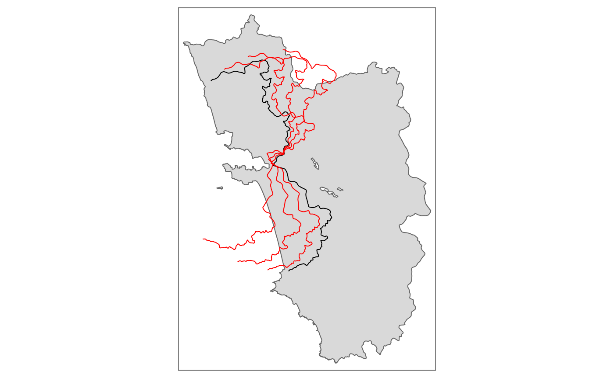
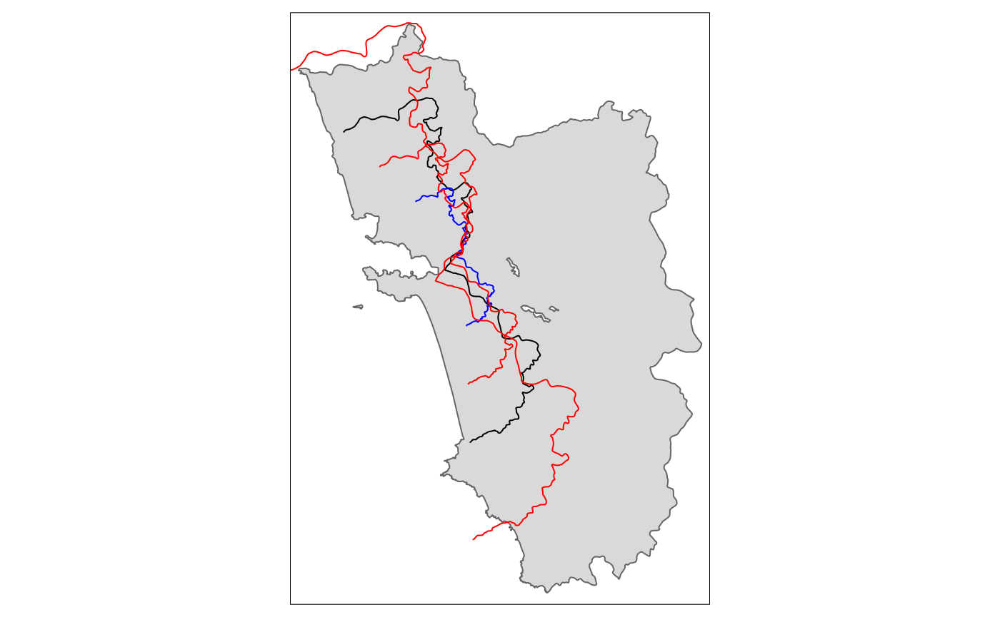
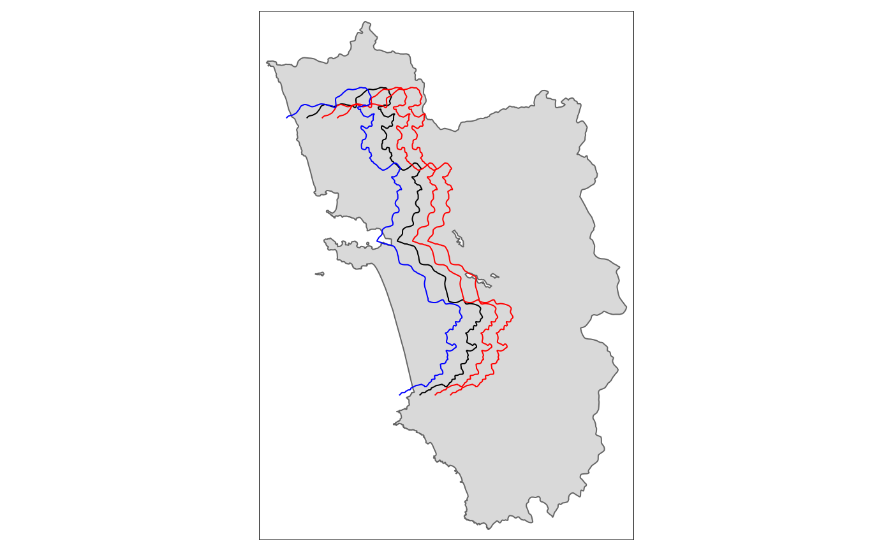
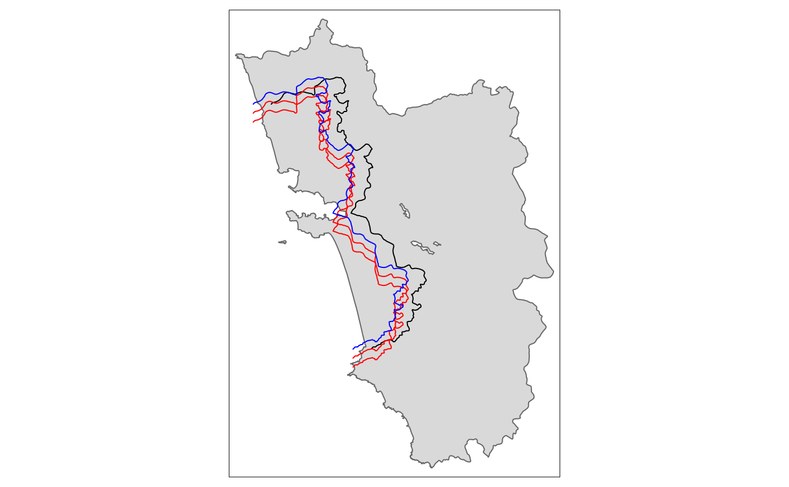
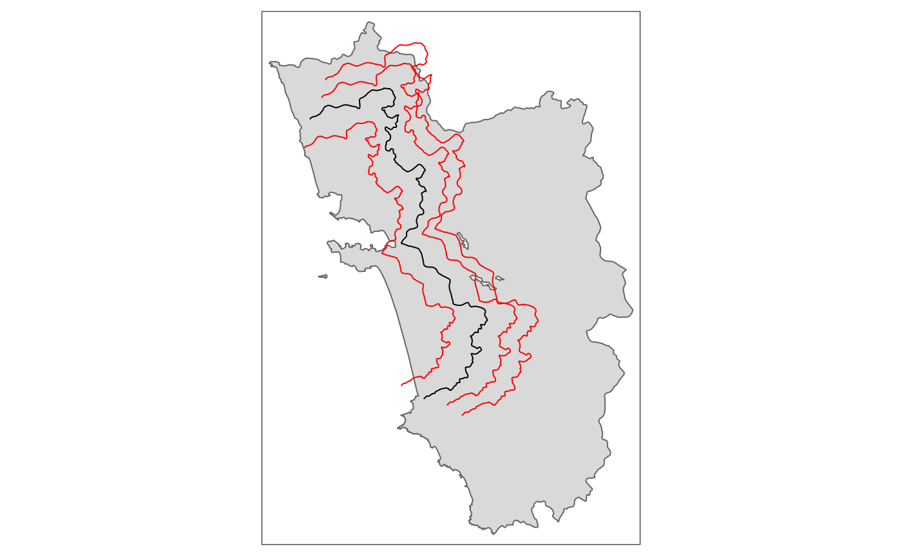
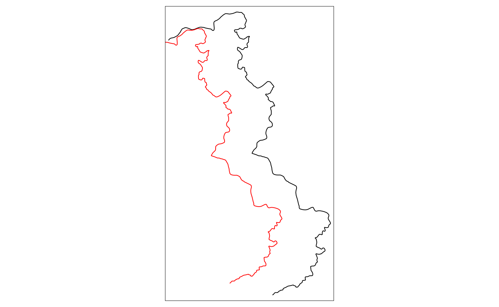
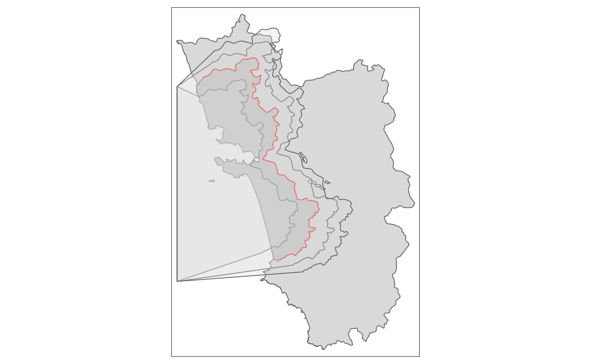

vignettes/shifting_borders.Rmd
shifting_borders.RmdOne of the most tedious tasks regarding spatial RDDs is the execution
of so-called placebo checks. With these, one has to show that the
postulated effect disappears when the RD cutoff is shifted around. In
other words, the regression coefficient on the treatment indicator has
to be statistically insignificant when the RD estimation is carried out
on any additional border. Just shifting around the border would be
already very cumbersome when it is carried out in a “point and click
fashtion” in a GIS API such as QGIS or ArcGIS. Here in R, thanks to the
sf package and its simple features, this is not that much
of a problem as we saw in the main vignette of SpatialRDD
already1.
The more tedious task, however, is that we need to determine which dots
on the map are the newly (placebo-)treated ones - after we moved our
cutoff. Simple distance calculations to the border do not help because
they don’t tell us on which side of the cutoff a point is. Since borders
are never straight lines and always have odd shapes, we also cannot just
come up with a rule based on x- and y-coordinates. And even if we could
it would be very tedious to figure out after every shift which were the
exact positions in space below/above the units count as treated. Thus
the only generalizeable solution left is to come up with a polygon
vector that covers the placebo-treated area. This vector can then be
used to do a spatial intersect and assign placebo-treatment and
placebo-control for every shifted border. That’s where the
SpatialRDD package comes in with a very generic solution
that allows the user to carry out a myriad of such placebo checks
without having to worry much about details.
library(SpatialRDD); data(cut_off, polygon_full, polygon_treated)
library(tmap)
set.seed(1088) # set a seed to make the results replicable
points_samp.sf <- sf::st_sample(polygon_full, 1000)
points_samp.sf <- sf::st_sf(points_samp.sf) # make it an sf object bc st_sample only created the geometry list-column (sfc)
points_samp.sf$id <- 1:nrow(points_samp.sf) # add a unique ID to each observationWhen the border is not approximating a line in space but is curving
and bending (i.e. in most cases), “placebo bordering” can be tricky and
is not straightforward. The simple subtraction/addition of a specified
distance from the distance2cutoff variable is also not a
very accurate description of a placebo boundary. On top of that, with
such a simple transformation of the distance column we can at best do a
placebo check on the “pooled” polynomial specification as the border
segments change and thus the assignment of fixed effect categories. A
placebo GRD design with an iteration over the boundarypoints is
literally impossible in such a case.
For a proper robustness check we thus have to create a new cut-off from
which we then can extract the corresponding borderpoints (with
discretise_border()) and also assign the border segment
categories for fixed effects estimations (with
border_segment()).
The shift_border() function can execute three different
(affine) transformations at the same time:
"shift" in units of CRS along the x- & y-axis
(provided with the option shift = c(dist1, dist2))"scale" in percent around the centroid, where
0.9 would mean 90%"rotate" in degrees around the centroid with the
standard rotation matrix \[
rotation =
\begin{bmatrix}
\cos \theta & -\sin \theta \\
\sin \theta & \cos \theta \\
\end{bmatrix}
\]
tm_rotate.sf10 <- shift_border(border = cut_off, operation = "rotate", angle = 10)
tm_rotate.sf25 <- shift_border(border = cut_off, operation = "rotate", angle = 25)
tm_rotate.sf45 <- shift_border(border = cut_off, operation = "rotate", angle = 45)
tm_shape(polygon_full) + tm_polygons() + tm_shape(cut_off) + tm_lines() +
tm_shape(tm_rotate.sf10) + tm_lines(col = "red") +
tm_shape(tm_rotate.sf25) + tm_lines(col = "red") +
tm_shape(tm_rotate.sf45) + tm_lines(col = "red")
tm_scale.sf.4 <- shift_border(border = cut_off, operation = "scale", scale = .4)
tm_scale.sf.7 <- shift_border(border = cut_off, operation = "scale", scale = .7)
tm_scale.sf1.5 <- shift_border(border = cut_off, operation = "scale", scale = 1.5)
tm_shape(polygon_full) + tm_polygons() + tm_shape(cut_off) + tm_lines() +
tm_shape(tm_scale.sf.4) + tm_lines(col = "blue") +
tm_shape(tm_scale.sf.7) + tm_lines(col = "red") +
tm_shape(tm_scale.sf1.5) + tm_lines(col = "red")
tm_shift.sf3 <- shift_border(border = cut_off, operation = "shift", shift = c(3000, 0))
tm_shift.sf6 <- shift_border(border = cut_off, operation = "shift", shift = c(6000, 0))
tm_shift.sf_4 <- shift_border(border = cut_off, operation = "shift", shift = c(-4000, 0))
tm_shape(polygon_full) + tm_polygons() + tm_shape(cut_off) + tm_lines() +
tm_shape(tm_shift.sf3) + tm_lines(col = "red") +
tm_shape(tm_shift.sf6) + tm_lines(col = "red") +
tm_shape(tm_shift.sf_4) + tm_lines(col = "blue")
tm_shift.sf_42 <- shift_border(border = cut_off, operation = "shift", shift = c(-4000, -2000))
tm_shift.sf_44 <- shift_border(border = cut_off, operation = "shift", shift = c(-4000, -4000))
tm_shape(polygon_full) + tm_polygons() + tm_shape(cut_off) + tm_lines() +
tm_shape(tm_shift.sf_42) + tm_lines(col = "red") +
tm_shape(tm_shift.sf_44) + tm_lines(col = "red") +
tm_shape(tm_shift.sf_4) + tm_lines(col = "blue") 
From the last shifted line, we can already see that a movement along the x-axis quite often requires also a correction on the y-axis for the cut-off movement to be meaningful. This will be explored in the following section, together with all the other operations.
A proper placebo border ideally involves both a shift and a re-scaling for it to be meaningful.
tm_placebo.sf1 <- shift_border(border = cut_off, operation = c("shift", "scale"), shift = c(-5000, -3000), scale = .85)
tm_placebo.sf2 <- shift_border(border = cut_off, operation = c("shift", "scale"), shift = c(4000, 2000), scale = 1.1)
tm_placebo.sf3 <- shift_border(border = cut_off, operation = c("shift", "scale"), shift = c(6000, 3000), scale = 1.2)
tm_shape(polygon_full) + tm_polygons() + tm_shape(cut_off) + tm_lines() +
tm_shape(tm_placebo.sf1) + tm_lines(col = "red") +
tm_shape(tm_placebo.sf2) + tm_lines(col = "red") +
tm_shape(tm_placebo.sf3) + tm_lines(col = "red")
tm_shift.sf <- shift_border(border = cut_off, operation = c("shift", "rotate", "scale"),
shift = c(-10000, -1000), angle = 0, scale = .9)
tm_shape(cut_off) + tm_lines() + tm_shape(tm_shift.sf) + tm_lines(col = "red")
And the according polygons to assign the treated dummies:
polygon1 <- cutoff2polygon(data = points_samp.sf, cutoff = tm_placebo.sf1, orientation = c("west", "west"), endpoints = c(.8, .2) # corners = 0,
# crs = 32643
)
polygon2 <- cutoff2polygon(data = points_samp.sf, cutoff = tm_placebo.sf2, orientation = c("west", "west"), endpoints = c(.8, .2) # corners = 0,
# crs = 32643
)
polygon3 <- cutoff2polygon(data = points_samp.sf, cutoff = tm_placebo.sf3, orientation = c("west", "west"), endpoints = c(.8, .2) # corners = 0,
# crs = 32643
)
tm_shape(polygon_full) + tm_polygons() +
tm_shape(polygon_treated) + tm_polygons(col = "grey") +
tm_shape(cut_off) + tm_lines(col = "red") +
tm_shape(polygon1) + tm_polygons(alpha = .3) +
tm_shape(polygon2) + tm_polygons(alpha = .3) +
tm_shape(polygon3) + tm_polygons(alpha = .3) 
Even though it is not as straightforward as it sounds because shifting a cutoff by a certain distance up or down and left or right is not quite enough. This is because most of the time borders are not straight lines. Thus we typically also need a shrinkage or enlargement and quite often also a transformation to change the “angle”.↩︎